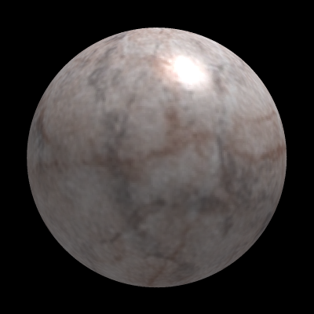
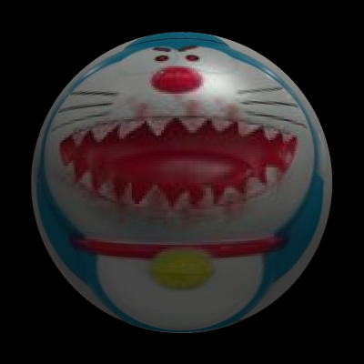
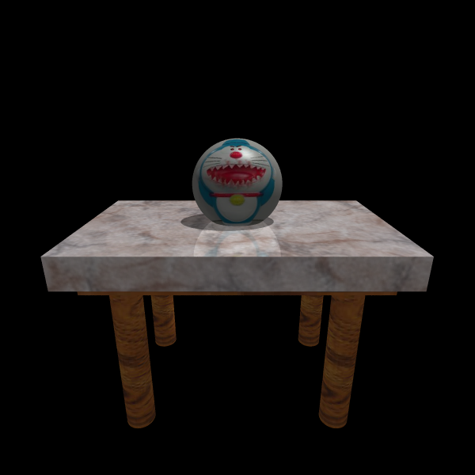

Texture Mapping
Texture mapping was implemented for spheres, cylinders and boxes:



Texture credits:
Various
websites
with images
, the Gimp, and one I made myself by taking a photo of
a plastic cartoon-character shaped cup and adding stuff. Don't ask.